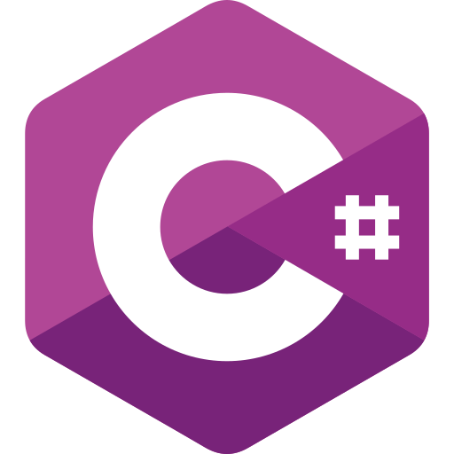
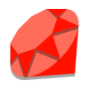
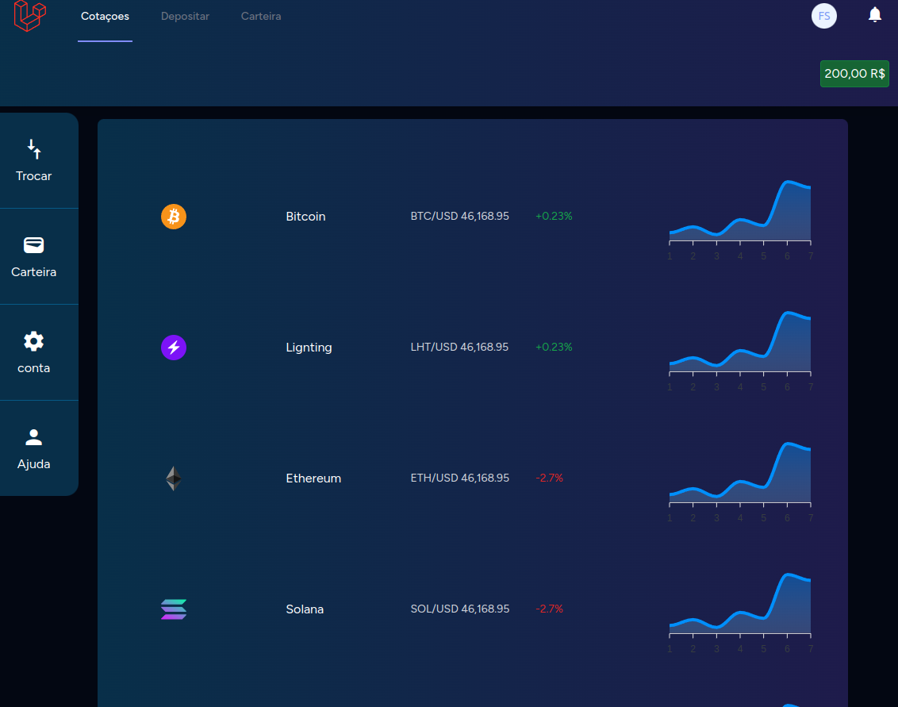
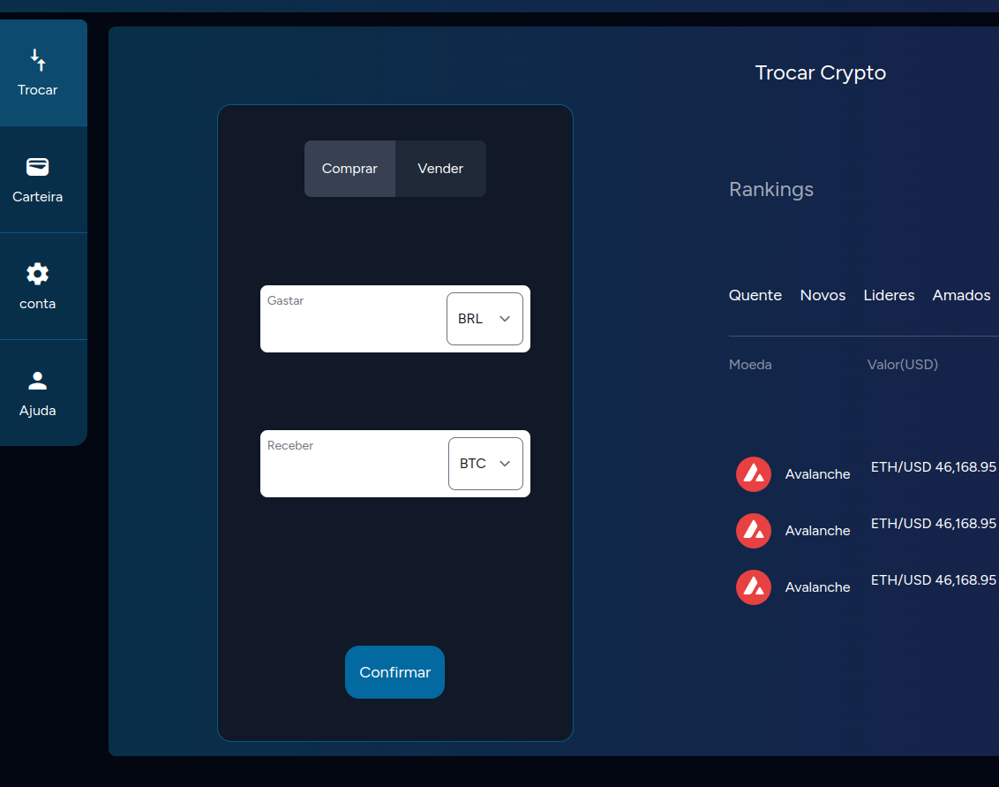
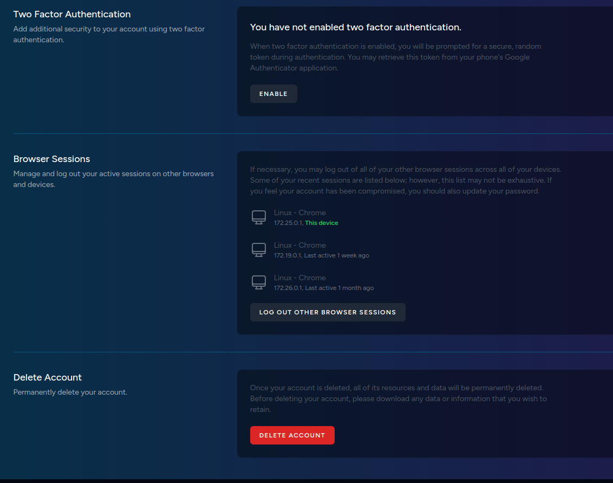
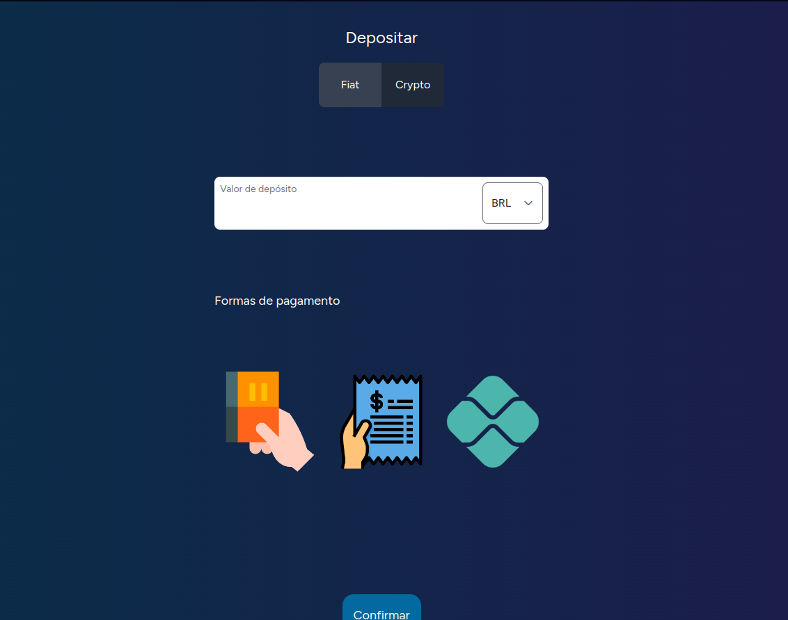

Sou Fullstack Developer com mais de 5 anos de experiência, tenho muito conhecimento em .NET, PHP, Js, Ruby. Gosto de resolver problemas complexos, mensageria, broadcasting, DDD, É comigo mesmo!


Pouco sobre mim
Possuo um bom conhecimento em assinatura digital com criptografia simétrica e
assimétrica. Já trabalhei em projetos que utilizam assinadores digitais e comunicação
em tempo real. Atualmente, trabalho em projetos que envolvem integrações com
plataformas distintas e um sistema de e-commerce. Estou sempre em busca de novos
desafios e adoro projetos complexos. Sou um grande admirador do manifesto ágil
e sempre prefiro investir em estratégias visando alta qualidade e elegância para o código.
Projetos inovadores!
Gby - Exchange
Gby exchange é um dos meus muitos projetos pessoais envolvendo cripto moedas.
Utilizando meus conhecimentos em infraestrura e cripto pode criar com maestria esse projeto que utiliza em seu Core
PHP, Laravel, Vuejs, tailwindcss. dentre outras ferramentas em sua infraestrura.
Esse projeto veio como forma de facilitar o acesso a criptomoedas para todas as pessoas, dando apoio em transações
e fornecendo um serviço de suporte.




WebSigner - Assinador Digital de documentos
Desenvolvi um sistema web de assinatura digital que possibilita a assinatura de documentos de
maneira prática através de aplicações web.
O sistema foi implementado utilizando ASP.NET Core no backend e Angular no frontend, sendo totalmente
arquitetado como uma Single Page Application (SPA). Para garantir a segurança e a autenticação, utilizei
conhecimentos em Docker e JWT. Além disso, tenho experiência com bibliotecas como iTextSharp, entre outras, para
facilitar o processo de assinatura digital.
Chat com websockets utilizando todos os recursos do ecossistema .NET.
Utilizando autenticação via Microsoft.Identity, Banco de dados SqlServer e o orm Entity Framework.
Para o websockets utilizei a estratégias de broadcasting de hubs fornecida pelo pacode Signal R da Microsoft.
Luxo Real foi um site que desenvolvi para uma consultoria Imobiliária de mesmo nome
em que pode explorar meus conhecimentos em laravel, tailwindcss, vuejs, docker entre outras ferramentas.
Aqui usei muitos recursos do ecossistema do laravel como "Scout". Pacote que fornece funcionalidades de full-text search
em models do eloquent, e também o uso de typesense para gerar indices e muito mais.